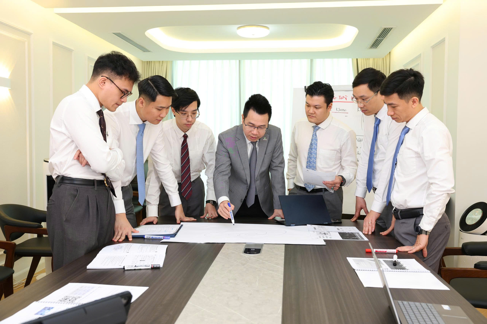

TỪ NHỮNG BÀI HỌC ĐẦU TIÊN ĐẾN GÓC NHÌN RỘNG HƠN
Buổi 4 cũng là dịp kết nối các thành viên Mùa 1 và Mùa 2. Những người đã đi qua các buổi học trước chia sẻ lại những điều mình ghi nhớ, những cách nhìn đã thay đổi và những kinh nghiệm muốn gửi tới các thành viên mới.
Mỗi thành viên Mùa 1 lựa chọn một điều đã học, một lời khuyên hoặc một đúc kết sau hành trình vừa qua để chia sẻ lại với Mùa 2.
HOẠT ĐỘNG DẦU KHÍ TRONG MỘT THẾ GIỚI NHIỀU BIẾN ĐỘNG
Một dự án dầu khí nước ngoài không chỉ được quyết định bởi yếu tố kỹ thuật. Giá dầu, địa chính trị, pháp lý, đối tác và điều kiện vận hành đều có thể tác động tới hiệu quả dự án.
Biến động giá có thể thay đổi hiệu quả và quyết định đầu tư.
Bối cảnh khu vực và quan hệ quốc tế có thể tạo ra những rủi ro mới.
Mỗi quốc gia có hệ thống pháp luật và cơ chế dầu khí khác nhau.
Hạ tầng, đối tác, công nghệ và điều kiện khai thác đều cần được tính tới.
KHÔNG CHỈ HỎI “DỰ ÁN NÀO?” – MÀ PHẢI HỎI “VÌ SAO?”
Việc lựa chọn dự án cần được đặt trong một chuỗi câu hỏi: dự án đang ở giai đoạn nào, PVEP tham gia với vai trò gì, rủi ro ở đâu và dự án có thực sự phù hợp với năng lực, mục tiêu và khẩu vị rủi ro của Tổng công ty hay không.
MUỐN BƯỚC RA QUỐC TẾ – CON NGƯỜI CẦN CHUẨN BỊ GÌ?
Một dự án quốc tế không chỉ cần vốn và phương án đầu tư. Nó cần những con người đủ khả năng làm việc trong môi trường đa quốc gia, phối hợp với đối tác và xử lý những yêu cầu phức tạp hơn.
TỪ CÂU HỎI NHỎ ĐẾN NHỮNG BÀI TOÁN LỚN HƠN
Qua từng buổi, các câu hỏi dần được mở rộng: từ câu chuyện của mỗi cá nhân, tới công nghệ, dự án, rồi tới những bài toán về đầu tư, rủi ro và môi trường quốc tế.
Sau một chặng đường, điều quan trọng không phải là ghi nhớ tất cả những gì đã nghe, mà là bắt đầu hình thành cách đặt câu hỏi, cách nhìn vấn đề và sự chủ động trên con đường phát triển của chính mình.

TỪ GÓC NHÌN TRÊN LỚP ĐẾN NGHIÊN CỨU CỤ THỂ
① Định hướng đầu tư dự án dầu khí nước ngoài
Đề xuất hướng lựa chọn dự án phù hợp, xem xét trạng thái dự án, quy mô và mức độ tham gia, khu vực địa lý, hình thức đầu tư, hiệu quả và các yếu tố rủi ro.
② Tiêu chuẩn CBNV làm việc tại dự án nước ngoài
Nghiên cứu yêu cầu đối với CBNV PVEP, có tham chiếu thông lệ và yêu cầu tại các đơn vị/đối tác vận hành dự án, từ đó xác định những nội dung cần chuẩn bị và phát triển.
③ Tiếp tục đề xuất chủ đề và câu hỏi
Mỗi thành viên tiếp tục đề xuất một chủ đề và ba câu hỏi để mở rộng nội dung trao đổi trong các buổi tiếp theo.
④ Xây dựng và rà soát IDP
Mùa 1 rà soát lại quá trình thực hiện IDP và đồng thời hỗ trợ Mùa 2. Mùa 2 xây dựng IDP gắn với định hướng nghề nghiệp và trao đổi với lãnh đạo trước khi hoàn thiện.
TÀI LIỆU BUỔI 4
Bấm vào tên tài liệu để xem.
{kind=link}
Một số file Word hoặc Excel có thể được tải xuống để mở trên thiết bị.
Bước ra một môi trường lớn hơn
không bắt đầu từ ngày được giao một dự án nước ngoài.
Nó bắt đầu từ việc
biết nhìn công việc trong bức tranh lớn,
biết nhận diện rủi ro,
chủ động chuẩn bị
và từng bước làm mình sẵn sàng cho những nhiệm vụ khó hơn.